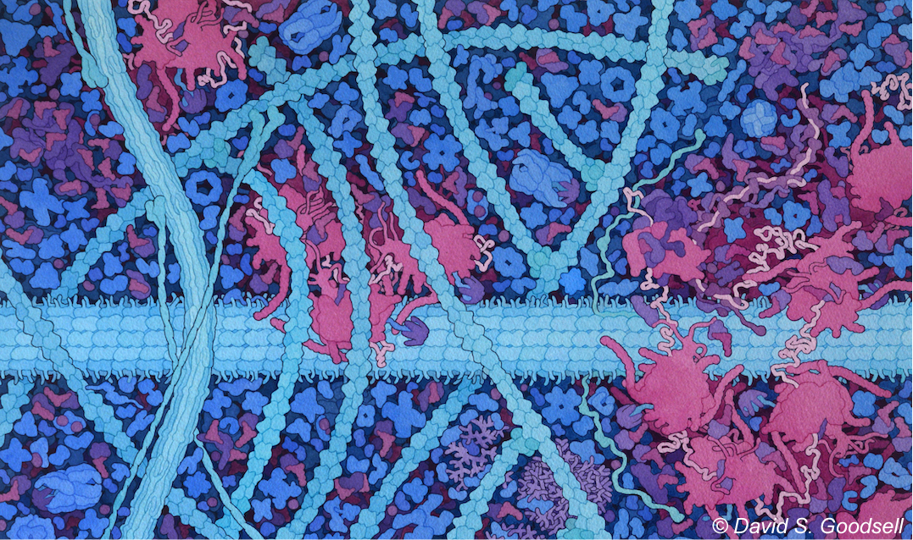
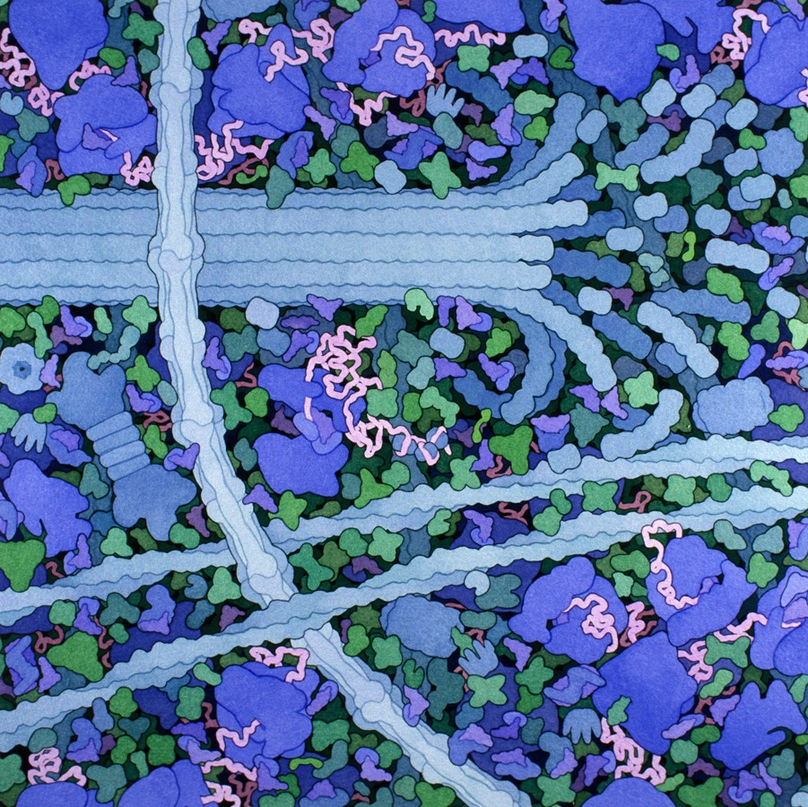

We are fascinated by cytoskeletal polymers that constantly undergo dynamic remodeling
ResearchWe seek to understand the molecular mechanisms underlying cytoskeletal dynamics and how cytoskeletal remodeling impacts fundamental cellular processes such as division, migration, and adhesion. We use multidisciplinary approaches, ranging from cryo-electron microscopy and crystallography to high-resolution light microscopy, biochemistry, and cell biology, to understand how disease-associated mutations alter cytoskeletal dynamics and organization, and how regulation of the cytoskeleton meshwork contributes to normal physiology and pathological conditions.

© David S. Goodsell